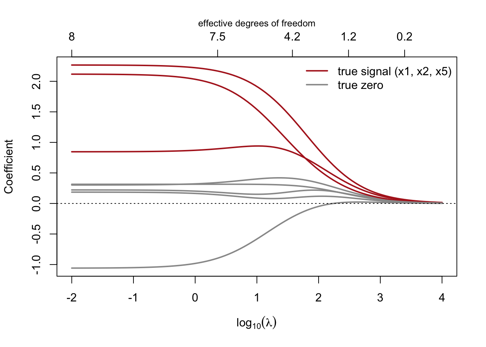
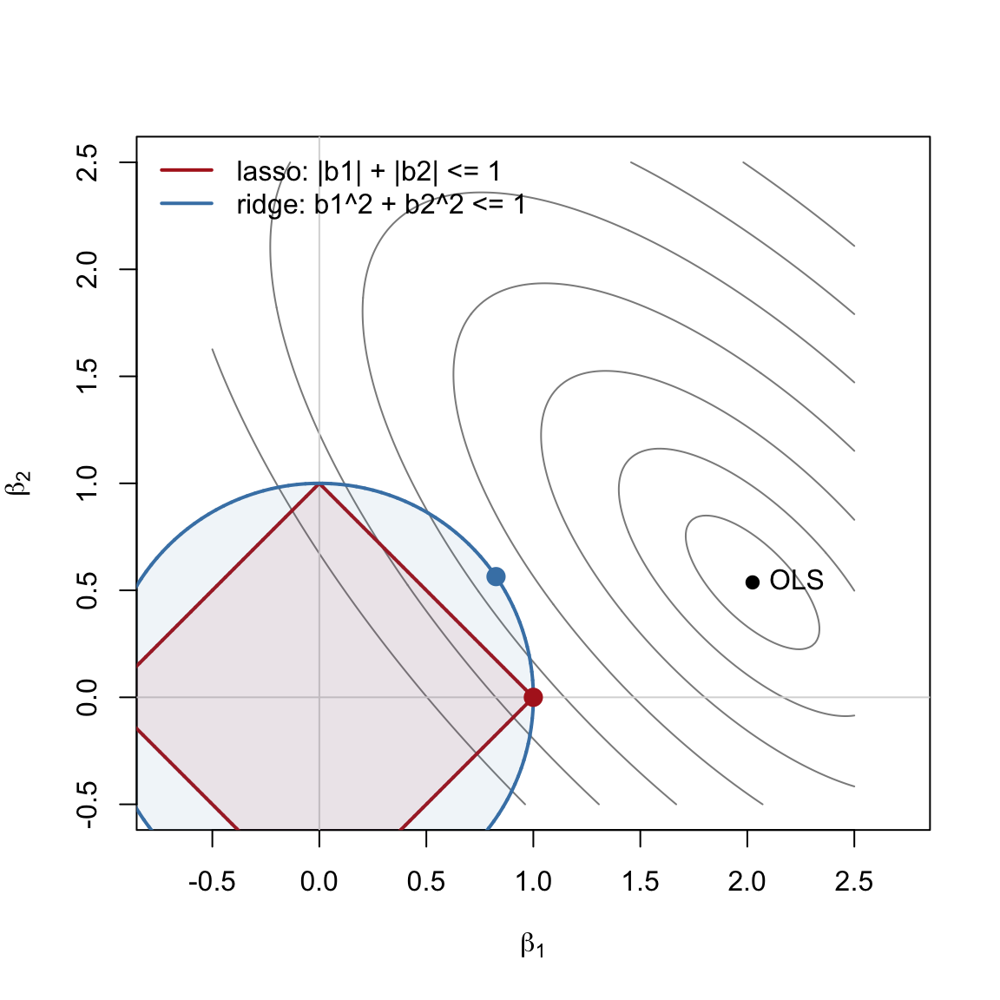
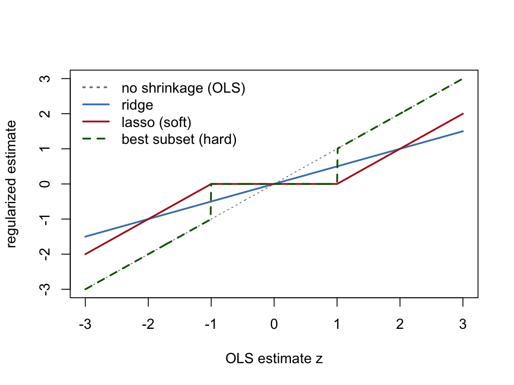
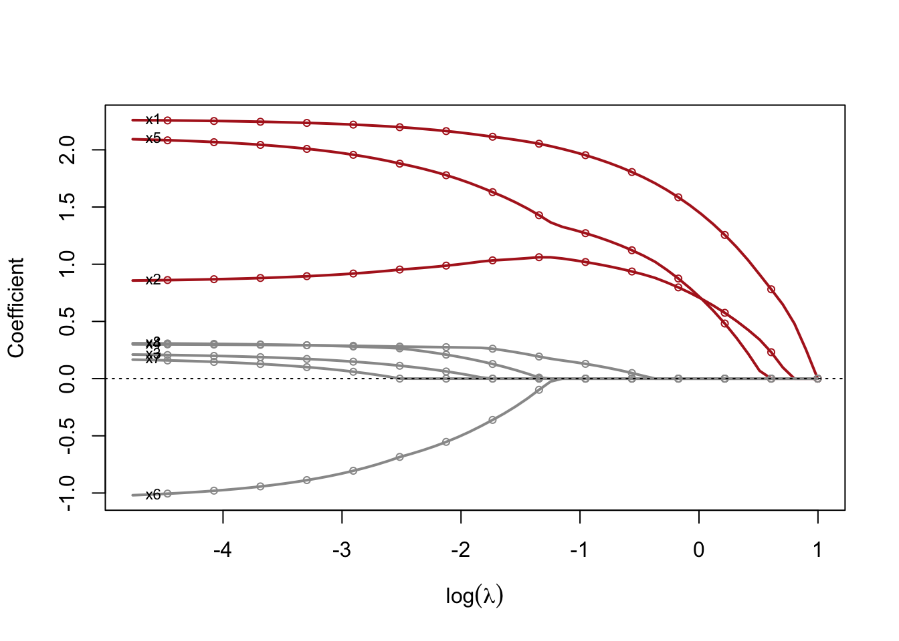
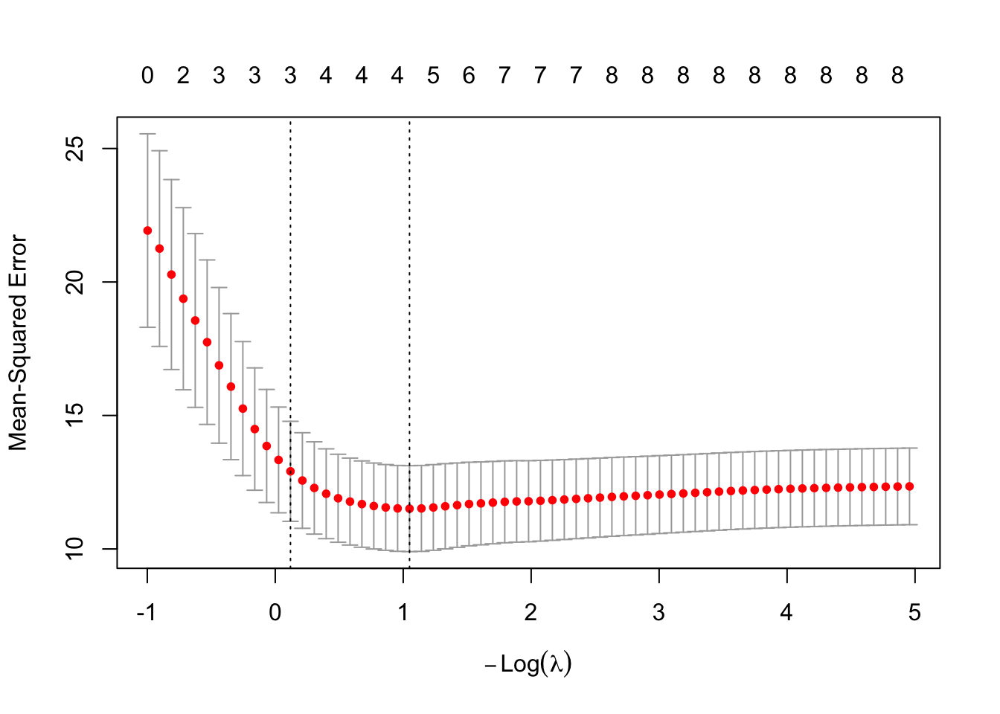
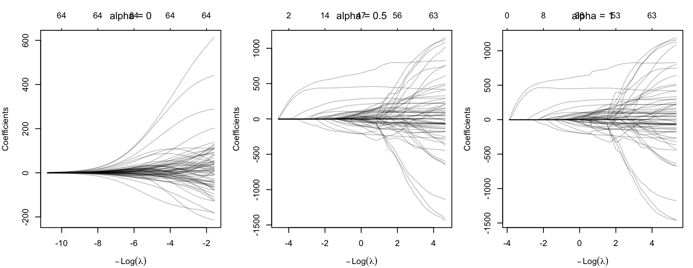
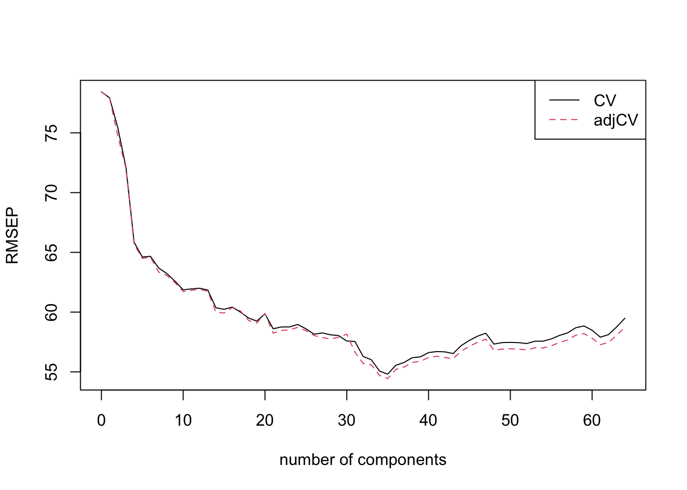

library(glmnet) # ridge, lasso, elastic net (coordinate descent)
library(pls) # principal component regression
library(lars) # the diabetes data from Efron et al. (2004)
set.seed(6400)13 Explainer: Regularization
Audience: first-year Master’s and PhD students who know linear regression and some matrix algebra.
Goal: For each of the four approaches in this module (ridge, lasso, elastic net, and principal component regression), we
- explain the math,
- implement it on example data (first by hand where that’s practical, then with the standard R package), and
- walk through the key lines of code.
13.1 Why regularize at all?
Recall the linear model from the last explainer:
\[ Y = X\beta + \varepsilon, \qquad \varepsilon \sim \text{Normal}(\mathbf{0}_n, \sigma^2 I_n). \]
Ordinary least squares (OLS) chooses \(\beta\) to minimize the residual sum of squares,
\[ \hat\beta^{\text{OLS}} = \arg\min_\beta \lVert Y - X\beta \rVert_2^2 = (X^\top X)^{-1}X^\top Y . \]
That formula requires \(X^\top X\) to be invertible, and in practice it breaks down in two ways:
- \(p \ge n\) (more predictors than observations, as in the riboflavin homework). \(X^\top X\) is singular, so infinitely many \(\beta\) fit the training data perfectly.
- Collinearity. \(X^\top X\) is technically invertible but nearly singular. Its smallest eigenvalues are close to 0, and since \(\text{Var}(\hat\beta^{\text{OLS}}) = \sigma^2 (X^\top X)^{-1}\), the coefficient variances blow up.
Even when OLS works, it is unbiased but can have high variance. Expected prediction error at a new point \(x_0\) splits into
\[ E\big[(Y_0 - \hat f(x_0))^2\big] = \sigma^2 + \text{Bias}^2\big(\hat f(x_0)\big) + \text{Var}\big(\hat f(x_0)\big). \]
Regularization deliberately adds a little bias to remove a lot of variance. Every method below does this by restricting how large or how complex \(\beta\) can be.
13.1.1 The general recipe
Ridge, lasso, and elastic net all solve a penalized least-squares problem:
\[ \hat\beta(\lambda) = \arg\min_\beta \underbrace{\lVert Y - X\beta\rVert_2^2}_{\text{fit the data}} + \underbrace{\lambda \, P(\beta)}_{\text{keep } \beta \text{ small}} . \]
- \(P(\beta)\) is the penalty, which decides how “small” is measured.
- \(\lambda \ge 0\) is a tuning parameter. \(\lambda = 0\) gives back OLS, and \(\lambda \to \infty\) forces \(\beta \to 0\). We choose \(\lambda\) by cross-validation.
Each penalized problem has an equivalent constrained form, \(\min_\beta \lVert Y - X\beta\rVert_2^2\) subject to \(P(\beta) \le t\), where each \(\lambda\) corresponds to some budget \(t\). The constrained form makes the geometry easy to see.
13.1.2 Two housekeeping rules: standardize and center
- Standardize the predictors. The penalty treats all coefficients the same, but a coefficient’s size depends on its predictor’s units. (Measuring height in mm instead of m would shrink its \(\beta\) by 1000 and make it almost free to keep.) So we rescale each column of \(X\) to mean 0 and variance 1 before penalizing.
- Don’t penalize the intercept. Shrinking \(\beta_0\) toward 0 would just bias predictions toward 0. If we center \(Y\) and \(X\), the intercept drops out (it equals \(\bar y\)).
From here on, unless stated otherwise, \(X\) is standardized and \(Y\) is centered.
13.2 The data
We use two datasets.
Simulated data, where we know the truth. This is adapted from Example 1 of Tibshirani (1996): \(p = 8\) predictors with correlation \(\text{Cor}(x_j, x_k) = 0.5^{|j - k|}\) and a sparse true coefficient vector,
\[ \beta = (3,\ 1.5,\ 0,\ 0,\ 2,\ 0,\ 0,\ 0), \qquad \sigma = 3 . \]
Only predictors 1, 2, and 5 matter. Because we know this, we can check which methods find them.
n_sim <- 60
p_sim <- 8
beta_true <- c(3, 1.5, 0, 0, 2, 0, 0, 0)
Sigma <- 0.5^abs(outer(1:p_sim, 1:p_sim, "-")) # AR(1) correlation matrix
Z <- matrix(rnorm(n_sim * p_sim), n_sim, p_sim)
X_sim <- Z %*% chol(Sigma) # correlated predictors
colnames(X_sim) <- paste0("x", 1:p_sim)
y_sim <- drop(X_sim %*% beta_true + rnorm(n_sim, sd = 3))
# standardize X (using the 1/n variance, to match glmnet) and center y
sd_n <- function(v) sqrt(mean((v - mean(v))^2))
Xs <- scale(X_sim, center = TRUE, scale = apply(X_sim, 2, sd_n))
yc <- y_sim - mean(y_sim)Code notes:
outer(1:p, 1:p, "-")builds the matrix of \(j - k\), so0.5^abs(...)is the AR(1) correlation matrix \(\Sigma\).- If \(Z\) has iid \(N(0,1)\) entries and \(\Sigma = R^\top R\) (Cholesky), then the rows of \(ZR\) have covariance \(R^\top R = \Sigma\). That is why we multiply by
chol(Sigma). - We standardize with the \(1/n\) standard deviation (not R’s default \(1/(n-1)\)) so that each column satisfies \(\frac1n\sum_i x_{ij}^2 = 1\) exactly. This makes the formulas below cleaner and lets our hand-coded results match
glmnetto many decimal places.
Real data: diabetes progression. This is the dataset Efron, Hastie, Johnstone & Tibshirani (2004) used to introduce LARS. There are 442 patients, and the outcome is a measure of disease progression one year after baseline. We use the expanded version x2, which has the 10 baseline variables (age, sex, BMI, blood pressure, six blood serum measures) plus their squares and pairwise interactions, for 64 predictors. Many of them are strongly correlated, which is a natural setting for regularization.
data(diabetes)
X_db <- unclass(diabetes$x2) # 442 x 64 matrix
y_db <- diabetes$y
dim(X_db)[1] 442 64train <- sample(nrow(X_db), 342) # hold out 100 patients for testing
X_tr <- X_db[train, ]; y_tr <- y_db[train]
X_te <- X_db[-train, ]; y_te <- y_db[-train]
# how collinear is this design?
round(kappa(scale(X_tr), exact = TRUE))[1] 15165The condition number \(\kappa = \sigma_{\max}/\sigma_{\min}\) of the standardized training design is very large, so OLS coefficients here will be unstable.
13.3 Ridge regression (\(\ell_2\) penalty)
13.3.1 The math
Ridge regression (Hoerl & Kennard, 1970) uses the squared \(\ell_2\) norm as its penalty:
\[ \hat\beta^{\text{ridge}} = \arg\min_\beta \lVert Y - X\beta\rVert_2^2 + \lambda \sum_{j=1}^p \beta_j^2 . \]
This objective is a smooth quadratic, so we can set its gradient to zero:
\[ -2X^\top(Y - X\beta) + 2\lambda\beta = 0 \;\;\Longrightarrow\;\; \boxed{\hat\beta^{\text{ridge}} = (X^\top X + \lambda I_p)^{-1} X^\top Y.} \]
Adding \(\lambda I_p\) moves every eigenvalue of \(X^\top X\) up by \(\lambda\). For any \(\lambda > 0\) the matrix is therefore invertible, even when \(p > n\). This “add a ridge to the diagonal” step is where the name comes from.
How ridge shrinks, through the SVD. Write \(X = UDV^\top\) with singular values \(d_1 \ge \cdots \ge d_p\). The ridge fitted values are
\[ \hat Y^{\text{ridge}} = X\hat\beta^{\text{ridge}} = \sum_{j=1}^p u_j \, \frac{d_j^2}{d_j^2 + \lambda} \, u_j^\top Y . \]
OLS would use a factor of 1 for every direction. Ridge multiplies the projection onto each principal direction \(u_j\) by \(d_j^2 / (d_j^2 + \lambda)\), which is less than 1. Directions with small \(d_j\) (low variance, where collinearity lives) are shrunk the most. The effective degrees of freedom are \(\text{df}(\lambda) = \sum_j d_j^2/(d_j^2+\lambda)\), which falls smoothly from \(p\) at \(\lambda = 0\) toward 0.
Ridge as augmented OLS. Ridge is exactly OLS on a padded dataset: append \(p\) fake observations with \(X\)-rows \(\sqrt\lambda\, I_p\) and response 0:
\[ \tilde X = \begin{bmatrix} X \\ \sqrt\lambda\, I_p \end{bmatrix}, \quad \tilde Y = \begin{bmatrix} Y \\ \mathbf 0_p \end{bmatrix} \;\;\Longrightarrow\;\; \tilde X^\top\tilde X = X^\top X + \lambda I, \quad \tilde X^\top \tilde Y = X^\top Y . \]
The fake observations each say “this coefficient is 0”, which pulls the estimates toward zero.
Bayesian view. Ridge is the posterior mean (and mode) under independent priors \(\beta_j \sim N(0, \tau^2)\), with \(\lambda = \sigma^2/\tau^2\).
13.3.2 Implementation from scratch
ridge_closed <- function(X, y, lambda) {
p <- ncol(X)
solve(crossprod(X) + lambda * diag(p), crossprod(X, y))
}
# check against OLS on the augmented data, for one lambda
lam <- 25
X_aug <- rbind(Xs, sqrt(lam) * diag(p_sim))
y_aug <- c(yc, rep(0, p_sim))
cbind(closed_form = drop(ridge_closed(Xs, yc, lam)),
augmented = coef(lm(y_aug ~ X_aug - 1))) closed_form augmented
x1 1.58410686 1.58410686
x2 0.89708971 0.89708971
x3 0.17378740 0.17378740
x4 0.41941820 0.41941820
x5 1.14121834 1.14121834
x6 -0.32424379 -0.32424379
x7 0.08301728 0.08301728
x8 0.30371878 0.30371878Code notes:
crossprod(X)computes \(X^\top X\) andcrossprod(X, y)computes \(X^\top Y\). They are faster and more numerically careful thant(X) %*% X.solve(A, b)solves the linear system \(A\beta = b\) directly. It is better thansolve(A) %*% b, which forms the inverse explicitly. We never need \((X^\top X + \lambda I)^{-1}\) itself.lm(y_aug ~ X_aug - 1)fits OLS with no intercept on the padded data. The two columns agree, which confirms the augmented-data identity.
Now we compute the full coefficient path by solving for \(\hat\beta\) over a grid of \(\lambda\) values:
lambdas <- 10^seq(-2, 4, length.out = 100)
B_ridge <- sapply(lambdas, function(l) ridge_closed(Xs, yc, l)) # p x 100
d <- svd(Xs)$d
dfs <- sapply(lambdas, function(l) sum(d^2 / (d^2 + l))) # effective df
matplot(log10(lambdas), t(B_ridge), type = "l", lty = 1, lwd = 2,
col = ifelse(beta_true != 0, "firebrick", "grey60"),
xlab = expression(log[10](lambda)), ylab = "Coefficient")
abline(h = 0, lty = 3)
axis(3, at = log10(lambdas)[c(1, 40, 60, 75, 90)],
labels = round(dfs[c(1, 40, 60, 75, 90)], 1))
mtext("effective degrees of freedom", side = 3, line = 2, cex = 0.8)
legend("topright", c("true signal (x1, x2, x5)", "true zero"),
col = c("firebrick", "grey60"), lwd = 2, bty = "n")
Code notes:
sapply(lambdas, function(l) ...)returns one column per \(\lambda\), giving a \(p \times 100\) matrix.matplot(..., t(B_ridge))draws one line per coefficient.- The top axis converts \(\lambda\) to effective df using the singular values from
svd(). This is the SVD shrinkage formula above, coded directly. - Coloring by
beta_true != 0lets us see that the true signals (red) stay large longest. The noise coefficients (grey) shrink, but they never become exactly 0. Ridge shrinks but does not select.
13.3.3 Implementation with glmnet
In practice we use glmnet, which also handles cross-validation. Its objective is scaled slightly differently from ours:
\[ \text{glmnet:}\quad \frac{1}{2n}\lVert Y - X\beta\rVert_2^2 + \lambda_{\text{glmnet}} \cdot \frac{1}{2}\lVert\beta\rVert_2^2 . \]
Multiply through by \(2n\) and you get our objective with \(\lambda = n\lambda_{\text{glmnet}}\). There is one more catch. For the Gaussian family, glmnet internally standardizes \(Y\) to unit variance before fitting, so the \(\lambda\) it reports corresponds to \(\lambda = n\lambda_{\text{glmnet}}/\text{sd}(Y)\). We check this:
lam_glmnet <- lam * sd_n(yc) / n_sim
fit_r <- glmnet(Xs, yc, alpha = 0, lambda = lam_glmnet,
standardize = FALSE, intercept = FALSE,
control = list(thresh = 1e-16))
cbind(closed_form = drop(ridge_closed(Xs, yc, lam)),
glmnet = as.numeric(coef(fit_r))[-1]) closed_form glmnet
x1 1.58410686 1.58410686
x2 0.89708971 0.89708972
x3 0.17378740 0.17378740
x4 0.41941820 0.41941819
x5 1.14121834 1.14121834
x6 -0.32424379 -0.32424379
x7 0.08301728 0.08301728
x8 0.30371878 0.30371878Code notes:
alpha = 0tellsglmnetto use the pure ridge penalty (more onalphain the elastic net section).- We set
standardize = FALSEandintercept = FALSEonly because we already standardized and centered the data ourselves. With raw data, leave both at their defaults (TRUE).glmnetwill then standardize internally and report coefficients on the original scale. control = list(thresh = ...)tightens the convergence tolerance so the match goes to many decimal places.- The takeaway: \(\lambda\) values are not comparable across software. Don’t copy a \(\lambda\) from
glmnetinto another package, or into a formula, without checking how each one scales the objective.
13.4 The lasso (\(\ell_1\) penalty)
13.4.1 The math
The lasso (Tibshirani, 1996) replaces the squared penalty with absolute values:
\[ \hat\beta^{\text{lasso}} = \arg\min_\beta \frac{1}{2n}\lVert Y - X\beta\rVert_2^2 + \lambda \sum_{j=1}^p |\beta_j| . \]
(Here we use glmnet’s \(\frac{1}{2n}\) scaling from the start. It only rescales \(\lambda\).)
This small change has a large effect: the lasso sets some coefficients exactly to zero, so it performs variable selection as well as shrinkage. There are two ways to see why.
1. Geometry. In the constrained form, we look for the point in the region \(\sum_j|\beta_j| \le t\) that has the smallest RSS. The RSS contours are ellipses centered at \(\hat\beta^{\text{OLS}}\). We expand the ellipses until they first touch the region. The \(\ell_1\) region is a diamond with corners on the axes, and an ellipse usually first touches a diamond at a corner, where some \(\beta_j = 0\). The \(\ell_2\) region (a circle) has no corners, so the contact point almost never lies on an axis.
set.seed(2)
X2 <- scale(MASS::mvrnorm(100, c(0, 0), matrix(c(1, 0.6, 0.6, 1), 2)))
y2 <- drop(X2 %*% c(2, 0.6) + rnorm(100))
y2 <- y2 - mean(y2)
b_ols <- coef(lm(y2 ~ X2 - 1))
rss <- function(b) sum((y2 - X2 %*% b)^2)
# RSS on a grid, for the contour plot
g <- seq(-0.5, 2.5, length.out = 200)
RS <- outer(g, g, Vectorize(function(a, b) rss(c(a, b))))
# brute-force the constrained solution: minimum RSS on each region's boundary
t_budget <- 1
th <- seq(0, 2 * pi, length.out = 20000)
diamond <- cbind(cos(th), sin(th)) / (abs(cos(th)) + abs(sin(th))) * t_budget
circle <- cbind(cos(th), sin(th)) * t_budget
b_lasso <- diamond[which.min(apply(diamond, 1, rss)), ]
b_ridge <- circle[which.min(apply(circle, 1, rss)), ]
contour(g, g, RS, levels = rss(b_ols) + c(5, 20, 50, 100, 170, 260, 370),
drawlabels = FALSE, col = "grey55", asp = 1,
xlab = expression(beta[1]), ylab = expression(beta[2]))
abline(h = 0, v = 0, col = "grey85")
polygon(diamond, border = "firebrick", lwd = 2, col = adjustcolor("firebrick", 0.08))
polygon(circle, border = "steelblue", lwd = 2, col = adjustcolor("steelblue", 0.08))
points(b_ols[1], b_ols[2], pch = 19)
points(b_lasso[1], b_lasso[2], pch = 19, col = "firebrick", cex = 1.4)
points(b_ridge[1], b_ridge[2], pch = 19, col = "steelblue", cex = 1.4)
text(b_ols[1], b_ols[2], "OLS", pos = 4)
legend("topleft", c("lasso: |b1| + |b2| <= 1", "ridge: b1^2 + b2^2 <= 1"),
col = c("firebrick", "steelblue"), lwd = 2, bty = "n")
Code notes:
outer(g, g, Vectorize(...))evaluates the RSS at every \((\beta_1, \beta_2)\) grid point, andcontour()draws the level sets.- The OLS estimate lies outside both regions, so each constrained solution is on the region’s boundary. That means we can find it by brute force: trace 20,000 points around each boundary and keep the one with the smallest RSS (
which.min). Dividing the unit circle by \(|\cos\theta| + |\sin\theta|\) turns it into the \(\ell_1\) diamond. - Brute force is fine for a 2-D picture. It is not how the lasso is actually computed, which comes next.
2. Soft-thresholding. Consider the lasso problem for one standardized predictor (or, equivalently, an orthonormal design). Let \(z = \frac1n x^\top Y\) be the least-squares coefficient. Because \(|\beta|\) has a kink at 0, we use the subgradient: the optimality condition is \(0 \in \beta - z + \lambda\,\partial|\beta|\), where \(\partial|\beta| = \text{sign}(\beta)\) if \(\beta \ne 0\) and \(\partial|\beta| = [-1, 1]\) if \(\beta = 0\). Solving it gives the soft-thresholding operator:
\[ \hat\beta = S(z, \lambda) = \text{sign}(z)\,(|z| - \lambda)_+ = \begin{cases} z - \lambda & z > \lambda \\ 0 & |z| \le \lambda \\ z + \lambda & z < -\lambda \end{cases} \]
If the least-squares coefficient is smaller than \(\lambda\) in absolute value, the lasso sets it to exactly zero. Otherwise it subtracts \(\lambda\) from it (shrinkage). Compare the other methods under the same orthonormal design:
| Method | Estimate as a function of the OLS estimate \(z\) |
|---|---|
| Ridge | \(z / (1 + \lambda)\) (proportional shrinkage, never 0) |
| Lasso | \(\text{sign}(z)(|z| - \lambda)_+\) (soft threshold) |
| Best subset | \(z \cdot \mathbb 1(|z| > \lambda)\) (hard threshold: keep or kill) |
z <- seq(-3, 3, length.out = 601); l <- 1
plot(z, z, type = "l", lty = 3, col = "grey50",
xlab = "OLS estimate z", ylab = "regularized estimate")
lines(z, z / (1 + l), col = "steelblue", lwd = 2)
lines(z, sign(z) * pmax(abs(z) - l, 0), col = "firebrick", lwd = 2)
lines(z, z * (abs(z) > l), col = "darkgreen", lwd = 2, lty = 2)
legend("topleft", c("no shrinkage (OLS)", "ridge", "lasso (soft)", "best subset (hard)"),
col = c("grey50", "steelblue", "firebrick", "darkgreen"),
lty = c(3, 1, 1, 2), lwd = 2, bty = "n")
Bayesian view. The lasso estimate is the posterior mode (MAP) under independent Laplace priors \(p(\beta_j) \propto e^{-|\beta_j|/b}\). The Laplace density has a sharp peak at 0, the probability version of the diamond’s corner. Note that the posterior mean under this prior (the “Bayesian lasso” of Park & Casella, 2008) is not sparse. See the Paper chapter for the debate about this.
13.4.2 Implementation from scratch: coordinate descent
The lasso has no closed form when \(p > 1\), but the one-dimensional soft-thresholding solution leads to a very simple algorithm. Coordinate descent cycles through the coefficients and, holding all the others fixed, updates each one with its exact one-dimensional solution:
- Compute the partial residual without predictor \(j\): \(r^{(j)} = Y - \sum_{k \ne j} x_k\beta_k\).
- Find the least-squares coefficient of \(r^{(j)}\) on \(x_j\): \(z_j = \frac1n x_j^\top r^{(j)}\).
- Soft-threshold it: \(\beta_j \leftarrow S(z_j, \lambda)\, /\, \big(\tfrac1n x_j^\top x_j\big)\). The denominator is 1 for standardized predictors.
- Repeat over all \(j\) until the coefficients stop changing.
The objective is convex, and the non-smooth part (\(\lambda\sum|\beta_j|\)) splits into separate terms for each coordinate, so this procedure converges to the global minimum (Tseng, 2001). This is the algorithm inside glmnet (Friedman, Hastie & Tibshirani, 2010).
soft_threshold <- function(z, gamma) sign(z) * pmax(abs(z) - gamma, 0)
lasso_cd <- function(X, y, lambda, beta = rep(0, ncol(X)),
tol = 1e-10, max_iter = 10000) {
n <- nrow(X)
xx <- colSums(X^2) / n # (1/n) x_j'x_j; equals 1 if standardized
r <- drop(y - X %*% beta) # current full residual
for (iter in seq_len(max_iter)) {
beta_old <- beta
for (j in seq_along(beta)) {
r <- r + X[, j] * beta[j] # step 1: partial residual
z_j <- sum(X[, j] * r) / n # step 2: simple LS coef
beta[j] <- soft_threshold(z_j, lambda) / xx[j] # step 3: soft-threshold
r <- r - X[, j] * beta[j] # put updated fit back
}
if (max(abs(beta - beta_old)) < tol) break # step 4: converged?
}
beta
}
lam_l <- 0.5
fit_l <- glmnet(Xs, yc, alpha = 1, lambda = lam_l,
standardize = FALSE, intercept = FALSE,
control = list(thresh = 1e-16))
cbind(truth = beta_true,
scratch_cd = round(lasso_cd(Xs, yc, lam_l), 5),
glmnet = round(as.numeric(coef(fit_l))[-1], 5)) truth scratch_cd glmnet
[1,] 3.0 1.86128 1.86128
[2,] 1.5 0.96766 0.96766
[3,] 0.0 0.00000 0.00000
[4,] 0.0 0.07911 0.07911
[5,] 2.0 1.17824 1.17824
[6,] 0.0 0.00000 0.00000
[7,] 0.0 0.00000 0.00000
[8,] 0.0 0.00000 0.00000Code notes:
- The residual trick. Recomputing \(r^{(j)} = Y - \sum_{k\ne j}x_k\beta_k\) from scratch would cost \(O(np)\) per coordinate. Instead we keep the full residual
r, add back predictor \(j\)’s contribution (addingX[, j] * beta[j]tor), update \(\beta_j\), and subtract the new contribution. Each update then costs only \(O(n)\). - Sparsity makes it fast. When
beta[j]is 0 and stays 0, the residual doesn’t change.glmnetgoes further with “active set” iterations that skip predictors that keep coming out zero. soft_thresholdis the boxed formula above, vectorized withpmax.- No
glmnetadjustment is needed this time. Its lasso objective is exactly \(\frac{1}{2n}\text{RSS} + \lambda\lVert\beta\rVert_1\), so the two columns match. (The lasso solution scales linearly with \(Y\), so the internal \(Y\)-standardization cancels. That is why the sd(Y) issue only showed up for ridge.) - Compare with
truth: the noise coefficients are mostly exactly 0, and the true signals are nonzero but shrunk toward zero. That shrinkage is the lasso’s bias.
13.4.3 The lasso path and choosing \(\lambda\)
Warm starts. To compute the whole path, we start at \(\lambda_{\max} = \max_j |\tfrac1n x_j^\top Y|\), the smallest \(\lambda\) at which every coefficient is 0. We then decrease \(\lambda\) step by step and initialize each fit at the previous solution. Neighboring solutions are close, so each fit takes only a few iterations.
lambda_max <- max(abs(crossprod(Xs, yc))) / n_sim
lam_grid <- lambda_max * 10^seq(0, -2.5, length.out = 60)
B_lasso <- matrix(0, p_sim, length(lam_grid))
b <- rep(0, p_sim)
for (k in seq_along(lam_grid)) {
b <- lasso_cd(Xs, yc, lam_grid[k], beta = b) # warm start from previous b
B_lasso[, k] <- b
}
fit_path <- glmnet(Xs, yc, alpha = 1, lambda = lam_grid,
standardize = FALSE, intercept = FALSE)
cols <- ifelse(beta_true != 0, "firebrick", "grey60")
matplot(log(lam_grid), t(B_lasso), type = "l", lty = 1, lwd = 2, col = cols,
xlab = expression(log(lambda)), ylab = "Coefficient")
matpoints(log(lam_grid)[seq(1, 60, 4)], t(as.matrix(fit_path$beta))[seq(1, 60, 4), ],
pch = 1, col = cols, cex = 0.7)
abline(h = 0, lty = 3)
text(min(log(lam_grid)), B_lasso[, 60], colnames(Xs), pos = 4, cex = 0.7)
Code notes:
b <- lasso_cd(..., beta = b)is the warm start: each fit starts from the previous solution instead of from zero.- Large \(\lambda\) is on the right. Moving left, coefficients “enter” one at a time. The path is piecewise linear in \(\lambda\), which is what the LARS algorithm exploits. Unlike ridge, the curves sit exactly on zero until the coefficient enters.
Cross-validation. To choose \(\lambda\) we use \(K\)-fold CV. cv.glmnet reports two values:
- \(\lambda_{\min}\): the value with the lowest mean CV error.
- \(\lambda_{1\text{se}}\): the largest \(\lambda\) (so the sparsest model) whose CV error is within one standard error of the minimum. This “one-standard-error rule” prefers simpler models when the data can’t tell the two apart.
cv_l <- cv.glmnet(X_sim, y_sim, alpha = 1, nfolds = 10)
plot(cv_l)
coef_1se <- coef(cv_l, s = "lambda.1se")
cbind(truth = c(NA, beta_true), lasso_1se = round(as.numeric(coef_1se), 3)) truth lasso_1se
[1,] NA -0.072
[2,] 3.0 1.601
[3,] 1.5 0.860
[4,] 0.0 0.000
[5,] 0.0 0.000
[6,] 2.0 0.844
[7,] 0.0 0.000
[8,] 0.0 0.000
[9,] 0.0 0.000
Code notes:
- Here we pass the raw
X_simandy_sim. With the defaultstandardize = TRUE,cv.glmnetstandardizes internally, fits an unpenalized intercept, and returns coefficients on the original scale. This is the normal way to use it. coef(cv_l, s = "lambda.1se")extracts the coefficients at the chosen \(\lambda\). The first row is the intercept.
13.5 Elastic net (a mix of \(\ell_1\) and \(\ell_2\))
13.5.1 The math
The lasso has two weaknesses that Zou & Hastie (2005) pointed out:
- When \(p > n\), the lasso can select at most \(n\) variables.
- Given a group of highly correlated predictors, the lasso tends to pick one more or less arbitrarily and set the rest to zero. Which one it picks can change from sample to sample.
Ridge has neither problem: correlated predictors get similar coefficients (the “grouping effect”). But ridge never selects. The elastic net combines the two penalties. In glmnet’s parameterization:
\[ \hat\beta^{\text{EN}} = \arg\min_\beta \frac{1}{2n}\lVert Y - X\beta\rVert_2^2 + \lambda\Big[\alpha\lVert\beta\rVert_1 + \frac{1-\alpha}{2}\lVert\beta\rVert_2^2\Big], \qquad 0 \le \alpha \le 1 . \]
- \(\alpha = 1\) gives the lasso and \(\alpha = 0\) gives ridge. This is why we passed
alpha = 0andalpha = 1above. - For \(0 < \alpha < 1\) the penalty region has corners on the axes (so selection still happens) and curved edges (so correlated predictors share weight).
- The coordinate-descent update needs only one change. The ridge part adds to the denominator: \[\beta_j \leftarrow \frac{S(z_j, \lambda\alpha)}{\tfrac1n x_j^\top x_j + \lambda(1-\alpha)} .\]
(The original Zou & Hastie paper writes the penalty as \(\lambda_1\lVert\beta\rVert_1 + \lambda_2\lVert\beta\rVert_2^2\) and recommends rescaling the result by \((1+\lambda_2)\). That “corrected” elastic net differs from what glmnet computes by exactly that factor.)
13.5.2 Implementation
Extending our coordinate descent is a one-line change:
enet_cd <- function(X, y, lambda, alpha, tol = 1e-10, max_iter = 10000) {
n <- nrow(X); beta <- rep(0, ncol(X))
xx <- colSums(X^2) / n
r <- y
for (iter in seq_len(max_iter)) {
beta_old <- beta
for (j in seq_along(beta)) {
r <- r + X[, j] * beta[j]
z_j <- sum(X[, j] * r) / n
beta[j] <- soft_threshold(z_j, lambda * alpha) /
(xx[j] + lambda * (1 - alpha)) # <- the only change
r <- r - X[, j] * beta[j]
}
if (max(abs(beta - beta_old)) < tol) break
}
beta
}
ys <- yc / sd_n(yc) # unit-variance y, so glmnet's internal y-scaling is a no-op
fit_en <- glmnet(Xs, ys, alpha = 0.5, lambda = 0.2, standardize = FALSE,
intercept = FALSE, control = list(thresh = 1e-16))
cbind(scratch = round(enet_cd(Xs, ys, lambda = 0.2, alpha = 0.5), 5),
glmnet = round(as.numeric(coef(fit_en))[-1], 5)) scratch glmnet
[1,] 0.36778 0.36778
[2,] 0.20477 0.20477
[3,] 0.00000 0.00000
[4,] 0.03543 0.03543
[5,] 0.22859 0.22859
[6,] 0.00000 0.00000
[7,] 0.00000 0.00000
[8,] 0.00000 0.00000Code notes: we compare on ys, a version of \(Y\) scaled to unit variance. The reason is the \(Y\)-scaling issue from the ridge section. The \(\ell_1\) part of glmnet’s penalty is unaffected by its internal standardization of \(Y\), but the \(\ell_2\) part effectively becomes \(\lambda(1-\alpha)/\text{sd}(Y)\). With \(\text{sd}(Y) = 1\) the two formulations are identical, and the columns match.
Choosing \(\alpha\) and \(\lambda\) together. We cross-validate over a small grid of \(\alpha\). To compare \(\alpha\) values fairly, we use the same fold assignment for every one, otherwise differences could just reflect different random splits. We do this on the diabetes data, which has strongly correlated predictors:
foldid <- sample(rep(1:10, length.out = nrow(X_tr))) # same folds for every alpha
alphas <- c(0, 0.25, 0.5, 0.75, 1)
cv_fits <- lapply(alphas, function(a)
cv.glmnet(X_tr, y_tr, alpha = a, foldid = foldid))
data.frame(
alpha = alphas,
lambda_min = signif(sapply(cv_fits, `[[`, "lambda.min"), 3),
cv_mse_min = round(sapply(cv_fits, function(f) min(f$cvm))),
nonzero_1se = sapply(cv_fits, function(f)
sum(coef(f, s = "lambda.1se")[-1] != 0))
) alpha lambda_min cv_mse_min nonzero_1se
1 0.00 17.80 3074 64
2 0.25 8.99 2924 13
3 0.50 4.94 2916 10
4 0.75 3.61 2916 9
5 1.00 2.71 2916 9Code notes:
sample(rep(1:10, length.out = n))gives each training row a random fold label from 1 to 10. Passing it asfoldidmakes all fivecv.glmnetcalls use the same split.sapply(cv_fits,[[, "lambda.min")pulls one element out of each fitted object in the list.- Reading the table: the CV error is usually similar across \(\alpha > 0\), but the number of nonzero coefficients changes a lot. Smaller \(\alpha\) keeps more correlated predictors together, and \(\alpha = 0\) (ridge) keeps all 64. If several \(\alpha\) values have about the same CV error, base the choice on what you need: sparsity and interpretability (larger \(\alpha\)) or stability under correlation (smaller \(\alpha\)).
par(mfrow = c(1, 3), mar = c(4, 4, 3, 1))
for (a in c(0, 0.5, 1)) {
plot(glmnet(X_tr, y_tr, alpha = a), xvar = "lambda",
col = "#00000040", main = paste("alpha =", a), font.main = 1)
}
13.6 Principal component regression (PCR)
13.6.1 The math
PCR (Massy, 1965) regularizes differently. Instead of penalizing \(\beta\), it throws away low-variance directions of \(X\) before regressing.
- Center (and usually standardize) \(X\) and take its SVD: \(X = UDV^\top\). The columns of \(V\) are the principal-component loadings, and the principal components are \(Z = XV = UD\). They are uncorrelated, and \(z_j\) has variance \(d_j^2/n\).
- Keep the first \(k < p\) components \(Z_k = XV_k\) and regress \(Y\) on them by OLS. Because the \(z_j\) are orthogonal, this is just \(p\) separate simple regressions: \(\hat\theta_j = z_j^\top Y / d_j^2\).
- Back-transform to the original predictors: \(X\beta = Z_k\theta = XV_k\theta\), so \(\hat\beta^{\text{PCR}} = V_k\hat\theta\).
PCR vs. ridge in one line each. Using the SVD shrinkage factors:
\[ \hat Y^{\text{ridge}} = \sum_{j=1}^p u_j\,\frac{d_j^2}{d_j^2+\lambda}\,u_j^\top Y, \qquad \hat Y^{\text{PCR}} = \sum_{j=1}^p u_j\,\mathbb 1(j \le k)\,u_j^\top Y . \]
Ridge shrinks low-variance directions smoothly. PCR keeps the top \(k\) directions completely and drops the rest (hard thresholding on the components). Both target the same thing, the near-collinear directions where OLS variance is large, but neither does variable selection. \(\hat\beta^{\text{PCR}}\) is generally nonzero for every original predictor, because each component is a mix of all of them.
The main caveat is that PCR picks components by how much variance in \(X\) they explain, without looking at \(Y\). Nothing guarantees that the high-variance directions are the ones that predict \(Y\). (Partial least squares, pls::plsr, is the variant that does use \(Y\).)
13.6.2 Implementation from scratch
pcr_scratch <- function(X, y, k) {
sv <- svd(X) # X = U D V'
Zk <- X %*% sv$v[, 1:k, drop = FALSE] # first k PC scores
theta <- crossprod(Zk, y) / sv$d[1:k]^2 # orthogonal => separate regressions
sv$v[, 1:k, drop = FALSE] %*% theta # back-transform: beta = V_k theta
}
# variance explained by each component of the simulated X
pve <- svd(Xs)$d^2 / sum(svd(Xs)$d^2)
round(cumsum(pve), 3)[1] 0.360 0.554 0.718 0.812 0.877 0.935 0.975 1.000cbind(truth = beta_true,
pcr_k3 = round(drop(pcr_scratch(Xs, yc, 3)), 3),
pcr_k8 = round(drop(pcr_scratch(Xs, yc, 8)), 3),
ols = round(coef(lm(yc ~ Xs - 1)), 3)) truth pcr_k3 pcr_k8 ols
Xsx1 3.0 0.920 2.267 2.267
Xsx2 1.5 1.159 0.846 0.846
Xsx3 0.0 0.840 0.222 0.222
Xsx4 0.0 0.593 0.302 0.302
Xsx5 2.0 -0.039 2.118 2.118
Xsx6 0.0 -0.099 -1.059 -1.059
Xsx7 0.0 0.378 0.186 0.186
Xsx8 0.0 0.545 0.314 0.314Code notes:
svd(X)returns a list withu,d(the singular values as a vector), andv. The PC scores areX %*% V_k.- Since the components are orthogonal, \(Z_k^\top Z_k = \text{diag}(d_1^2, \ldots, d_k^2)\), so the OLS fit on the components is
crossprod(Zk, y) / d^2and no matrix inverse is needed. drop = FALSEkeeps a one-column result as a matrix whenk = 1, so%*%still works.- Sanity check: with \(k = p = 8\) we keep every direction, and PCR gives exactly the OLS coefficients. With \(k = 3\), every coefficient is still nonzero. That is the “no selection” point. Also look at
x5: it is a true signal (\(\beta_5 = 2\)), but with \(k = 3\) PCR estimates it near 0, while giving sizable weight to the noise predictorsx3andx8. The top three components were chosen to explain variance in \(X\), not to predict \(Y\), so they happen to miss the direction thatx5contributes.
13.6.3 Implementation with pls
pcr_fit <- pcr(y ~ X, data = data.frame(y = y_tr, X = I(X_tr)),
scale = TRUE, validation = "CV",
segments = lapply(1:10, function(f) which(foldid == f)))
validationplot(pcr_fit, val.type = "RMSEP", main = "", legendpos = "topright")
cv_rmsep <- RMSEP(pcr_fit, estimate = "CV")$val[1, 1, -1] # drop the 0-component entry
k_best <- which.min(cv_rmsep)
k_best35 comps
35 
Code notes:
pcr(y ~ X, data = data.frame(y = y_tr, X = I(X_tr))): wrapping the matrix inI()stores it as a single matrix column namedX, so the formulay ~ Xuses all 64 predictors.scale = TRUEstandardizes the predictors before the SVD. This matters for PCR, since otherwise high-variance units would dominate the components.segments = ...reuses the elastic-net fold assignment so the comparison below is fair.RMSEP(...)$valis a 3-D array (estimate, response, number of components). The first entry is the intercept-only model, so we drop it with-1beforewhich.min.
13.7 Putting it together: test-set comparison on the diabetes data
We fit every method on the 342 training patients, choose tuning parameters by 10-fold CV with the same folds throughout, and evaluate on the 100 held-out patients.
test_mse <- function(pred) mean((y_te - pred)^2)
ols_fit <- lm(y ~ ., data = data.frame(y = y_tr, X_tr))
ols_mse <- test_mse(predict(ols_fit, newdata = data.frame(X_te)))
glm_row <- function(fit, s, label) {
c(method = label,
test_mse = round(test_mse(predict(fit, X_te, s = s))),
nonzero = sum(coef(fit, s = s)[-1] != 0))
}
res <- rbind(
c(method = "OLS", test_mse = round(ols_mse), nonzero = ncol(X_tr)),
glm_row(cv_fits[[1]], "lambda.min", "Ridge (alpha = 0)"),
glm_row(cv_fits[[3]], "lambda.min", "Elastic net (alpha = 0.5)"),
glm_row(cv_fits[[5]], "lambda.min", "Lasso (lambda.min)"),
glm_row(cv_fits[[5]], "lambda.1se", "Lasso (lambda.1se)"),
c(method = paste0("PCR (k = ", k_best, ")"),
test_mse = round(test_mse(drop(predict(pcr_fit, newdata = data.frame(X = I(X_te)),
ncomp = k_best)))),
nonzero = ncol(X_tr))
)
knitr::kable(as.data.frame(res), align = "lrr",
col.names = c("Method", "Test MSE", "# nonzero coefficients"))| Method | Test MSE | # nonzero coefficients |
|---|---|---|
| OLS | 7728 | 64 |
| Ridge (alpha = 0) | 3537 | 64 |
| Elastic net (alpha = 0.5) | 3276 | 18 |
| Lasso (lambda.min) | 3280 | 17 |
| Lasso (lambda.1se) | 3427 | 9 |
| PCR (k = 35) | 3797 | 64 |
Code notes:
predict(fit, X_te, s = s)on acv.glmnetobject predicts at the chosen \(\lambda\) ("lambda.min"or"lambda.1se").glmnetapplies its internal standardization automatically.cv_fits[[1]],[[3]], and[[5]]are the \(\alpha = 0, 0.5, 1\) fits from the elastic-net section, so all methods share one set of CV folds.- The
nonzerocolumn shows the selection behavior: OLS, ridge, and PCR use all 64 predictors, while the lasso and elastic net use only some of them.
How to read the results. With only 100 test patients, differences of a few hundred in MSE are within noise. (Try a different set.seed and the ranking may change.) The pattern that holds up is:
- Every regularized method beats or matches OLS. OLS spends 64 degrees of freedom on a design with an enormous condition number, and its variance shows up in the test error.
- The lasso and elastic net get similar accuracy to ridge with far fewer predictors, which is what we want when interpretability matters.
- PCR is competitive but usually slightly worse, since it picks directions without looking at \(y\).
13.8 Summary
| Ridge | Lasso | Elastic net | PCR | |
|---|---|---|---|---|
| Penalty / constraint | \(\lambda\lVert\beta\rVert_2^2\) | \(\lambda\lVert\beta\rVert_1\) | \(\lambda[\alpha\lVert\beta\rVert_1 + \tfrac{1-\alpha}{2}\lVert\beta\rVert_2^2]\) | keep top \(k\) PCs of \(X\) |
| Shrinkage pattern | smooth: \(\frac{d_j^2}{d_j^2+\lambda}\) per PC direction | soft threshold per coefficient | soft threshold + proportional | hard threshold per PC direction |
| Exact zeros (selection)? | no | yes | yes | no |
| Closed form? | yes | no (coordinate descent / LARS) | no (coordinate descent) | yes (SVD) |
| Works for \(p > n\)? | yes | yes, but selects \(\le n\) | yes, can select \(> n\) | yes (\(k < n\)) |
| Correlated predictors | shares weight (grouping) | picks one, often unstable | shares weight and selects | combines them into PCs |
| Bayesian analogue | Normal prior (posterior mean = mode) | Laplace prior (posterior mode) | Normal × Laplace prior | — |
| Tuning | \(\lambda\) | \(\lambda\) | \(\lambda\), \(\alpha\) | \(k\) |
| R | glmnet(alpha = 0) |
glmnet(alpha = 1) |
glmnet(alpha = a) |
pls::pcr() |
Rules of thumb:
- Expect many small effects? Ridge usually predicts best.
- Expect a few large effects and want an interpretable model? Use the lasso, and treat its selected set as a screen, not a final answer (see the Bühlmann discussion in the Paper chapter).
- Groups of correlated predictors, or \(p \gg n\) where you want more than \(n\) variables? Use the elastic net.
- Predictors are noisy measurements of a few underlying factors? PCR (or PLS) matches that structure.
- Whatever you choose: standardize, don’t penalize the intercept, tune by CV with fixed folds, and evaluate on held-out data.
13.9 References
- Efron, B., Hastie, T., Johnstone, I. & Tibshirani, R. (2004). Least angle regression. Annals of Statistics, 32, 407–499.
- Friedman, J., Hastie, T. & Tibshirani, R. (2010). Regularization paths for generalized linear models via coordinate descent. Journal of Statistical Software, 33(1).
- Hastie, T., Tibshirani, R. & Friedman, J. (2009). The Elements of Statistical Learning (2nd ed.), Ch. 3. Springer.
- Hoerl, A. E. & Kennard, R. W. (1970). Ridge regression: biased estimation for nonorthogonal problems. Technometrics, 12, 55–67.
- Massy, W. F. (1965). Principal components regression in exploratory statistical research. JASA, 60, 234–256.
- Park, T. & Casella, G. (2008). The Bayesian lasso. JASA, 103, 681–686.
- Tibshirani, R. (1996). Regression shrinkage and selection via the lasso. JRSS-B, 58, 267–288.
- Tibshirani, R. (2011). Regression shrinkage and selection via the lasso: a retrospective. JRSS-B, 73, 273–282.
- Tseng, P. (2001). Convergence of a block coordinate descent method for nonsmooth separable minimization. J. Optimization Theory and Applications, 109, 475–494.
- Zou, H. & Hastie, T. (2005). Regularization and variable selection via the elastic net. JRSS-B, 67, 301–320.